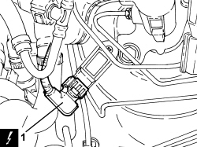
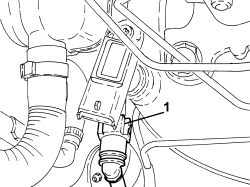
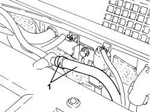
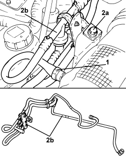

3330D28 VACUUM PIPE COMPLETE WITH SINGLE-ACTING VALVES - R.R.
- Path
- Procedures > 33 BRAKES > 3330 HYDRAULIC BRAKING SYSTEM > 3330D BRAKE VACUUM SYSTEM > 3330D28 VACUUM PIPE COMPLETE WITH SINGLE-ACTING VALVES - R.R.
- Kind
- repair procedure (removal / refitting; the operation number is the code)
- Applies to
- engines: 3.2 JTS; all production periods
- Interactive page
- https://sloeber94.github.io/elrnDB-aBrrSpdr/en/#/946004279
Applies to: engines: 3.2 JTS; all production periods
 Removing
Removing
 Refitting
RefittingOp. 5530B52 BATTERY SUPPORT/DRIP TRAY - R.R
1. Detach the electrical connection for the vacuum sensor on the brake servo.
Description | Connector | |
|---|---|---|
1 | Brake servo vacuum sensor |

Applies to: engines: 3.2 JTS; all production periods
1. Disconnect the rapid connector for the brake servo vacuum pipe from the vacuum sensor support.

Applies to: engines: 3.2 JTS; all production periods
1. Loosen the band and disconnect the vacuum pipe from the air intake chamber.

Applies to: engines: 3.2 JTS; all production periods
1. Loosen the band and disconnect the vacuum pipe from the air intake hose.
2. Undo the bolt (2a) and remove the vacuum pipe complete with one-way valves (2b).

Applies to: engines: 3.2 JTS; all production periods
Refitting
Removing- Place the vacuum pipe with one-way valves in its housing and secure it using the bolt.
- Connect the vacuum pipe to the air intake hose and to the air chamber using the bands.
- Connect the rapid connector for the brake servo vacuum pipe to the vacuum sensor support.
- Connect the electrical connection for the vacuum sensor on the brake servo.